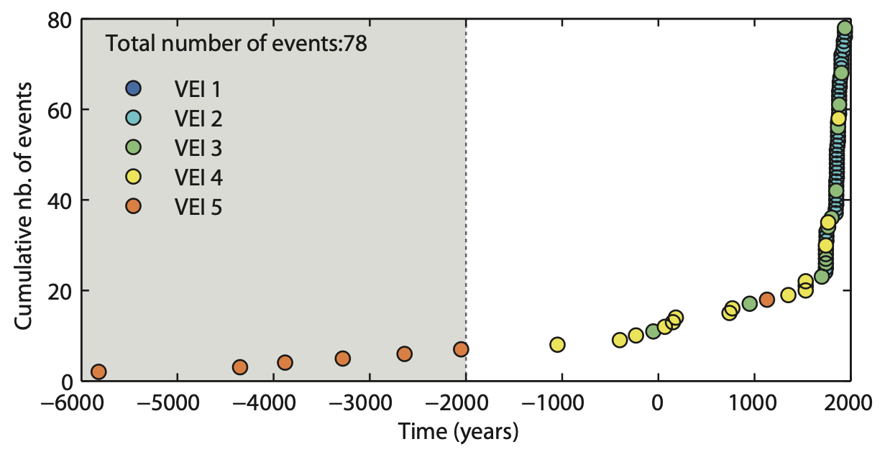

Adding a temporal component
The hazard assessment previously produced represents a scenario-based approach, meaning that the spatial distribution of hazard values is conditional to the occurrence of the eruption scenario. In this sense, this type of data does not contain any temporal information on the probability of occurrence of a given eruption scenario.
Relying here on the assumption that the future eruptive behaviour of a given volcano will follow its past trend, we will here introduce a component of eruption probability to the scenario-based approach using a simple Poisson approach.
Objectives
The aim of this exercise is to illustrate how a temporal component can be added to a scenario-based hazard assessment. We will consider VEI-based eruption scenarios and use the GVP database to assess eruptive history. The objectives of this module are to:
- Understand caveats when projecting past history to future eruption scenarios (i.e., historical v. geological biases).
- Compute probabilities of occurrences of eruptions of specific VEI using a Poisson approach.
Eruptive history
Assumption
Here, we assume that the past is the key to the future. In other words, we will only attempt to predict a similar behaviour compared to what has already happened.
We have already briefly touched upon the estimation of eruption frequency for La Palma. However, this has illustrated the limitations of the GVP database for low-explosivity eruptions, and the record for La Palma is dominated by VEI 2 eruptions. Let's start our journey through eruptive records by taking a look at the global eruption record.
Global eruption record
Look at the figures below.
Figure 1 shows global rates of eruptions recorded by the GVP for the past 6 centuries1. Before moving to Figure 2, spend some time thinking about this plot and what you can observe.
Solution
This plot shows an apparent increase in active volcanoes through time. Is that really true? Nah. Figure 2 puts this data in a different perspective.
Figure 2 shows this global rate in the perspective of population growth and - tadaa! - both increases are correlated. So the more people, the more eruption reports. In the 15th century, great expeditions and the development of the printed press increased the probability of both new eruptions to not remain unnoticed, but also their record to persist through time.
Figure 3 zooms on the last 200 years and further puts the global eruptive record into perspective of two aspects:
- Great wars and economic crises result in a drop in the number of reported eruptions.
- Large eruptions result in an increase in reports through renewed interests.
In addition, one last thing to observe is that although the global rate of eruption increases, the record of relatively large (i.e., ≥VEI 4) eruptions through time remains constant.
Geological vs historical record
Various methods have been developed to quantify eruptions frequencies and probabilities23. Although not all yielding the same results, one aspect remains clear:
Small eruptions are more frequent than large eruptions.
When interpreting eruption catalogues, it is necessary to interpret trends in the perspective of both geological and historical biases.
A historical bias arises from the fact that small eruptions are frequent, but result in thin deposits that are likely to suffer erosion. In unpopulated places (or at the time when specific places were unpopulated), they are also likely to go unnoticed. The historical bias can result in two main consequences: 1. The recent eruptive record is dominated by small, frequent eruptions that are missing from the older record. 2. The perception of future the activity at a given volcano is dominated by the recent history.
A geological bias is the consequence of the fact that larger eruptions are less frequent but are more likely to be preserved in the stratigraphy. As a result, the oldest part of an eruption catalogue might be (apparently) dominated by large eruptions and be depleted from the smaller spectrum of activity. Conversely, the recent history might not contain any occurrence of large eruptions.
The following exercise digs into the eruptive history of Cotopaxi volcano (Ecuador)
Exercise
We have already looked at one VEI 4 Plinian eruption of Cotopaxi volcano (Ecuador). Let's look at its eruptive history as documented by the GVP catalogue. Figure 4 plots the cumulative number of eruptions (y-axis) through time considering eruptions of all VEI.

Question 1: Eruptive history
Look at Figure 4:
- How does the eruptive record changes in time, both in term of frequency and VEI?
Validating initial assumptions
Let's put back the eruptive record of Cotopaxi volcano in the context of the first assumption that future activity will reflect the trends observed in the past. As a matter of fact, the behaviour at Cotopaxi volcano changed from dominantly rhyolitic to dominantly andesitic about 4000 years ago4. The GVP plot shows how most VEI 5 eruptions occurred before that shift. Therefore, we will only attempt predicting frequencies of future eruptions based on the recent andesitic activity, and we must discard the 6 VEI 5 eruptions older than 4000 years from our analysis.
Bear in mind that we don't argue here that predicting what has not yet happened is impossible - it is a very different approach that has to account for very low probabilities and high uncertainties.
Record completeness
Following the same approach as before, let's retrieve the eruptive history for Cotoaxi from TephraProb:
- On the main
TephraProbwindow, clickInput>GVP. - Enter the
idof352050, clickAccessand wait a few seconds. - This first plot shows the frequency of occurrence of each VEI. Change the
Plot typetoCumulativeand click thePlotbutton. - This new plot shows the cumulative number of eruption through time, colour-coded by the VEI.
- Note that you can select and plot individual VEI classes.
Let's reflect back on the two different biases:
- Historical bias → the recent part of the eruptive catalogue is biased towards smaller eruptions → it records most small eruptions, but large eruptions might be to rare to have occurred in this recent history.
- Geological bias → the older part of the eruptive catalogue is biased towards larger eruptions → it records most large eruptions, but small eruptions might have been lost to erosion.
In order to correct these biases, it is necessary to assess which part of the eruption record is complete for a given VEI.
We have previously seen that the slope of the segments visible on these cumulative plots represents a frequency of eruption. Under the assumption that the future will reflect the past, we must assess where the eruption frequency is constant. Let's do this for VEI 3 and VEI 4.
- Using
TephraProb's GVP tool, plot the frequency of VEI 3 and VEI 4 eruptions for Cotopaxi volcano. - Starting from the present, navigate back in time and identify a shift in eruption frequency. This indicates when the eruptive record for a given VEI ceases to be complete.
Question 2: Record completeness
- What year marks the onset of record completeness for eruptions of VEI 3 and 4 at Cotopaxi volcano?
- What are the eruption frequencies (in number of eruptions per year) for both VEI?
Eruption probability
It is sometime possible to assume that volcanic eruptions are stochastic processes that can be described by a Poisson distribution. This assumption requires eruptions to be independent (i.e., no dependency between the repose interval and magnitude) and may occur only one at a time. In addition, the probability of an event occurring in the next small time increment does not depend on the time that has already elapsed since the last event occurred56.
Here, we are interested in estimating the probability \(P\) of a repose time \(T\) to be smaller than or equal to an hypothetical time period \(t\). The simplest case of a Poisson process results in an exponential distribution, and we can estimate the probability of an eruption to occur in a given time interval as:
Where \(\lambda\) is the mean eruption rate (nb of eruption per year) and \(\Delta t\) is the forecasting time period, starting from present day.
Question 3: Eruption probability
What is the probability of:
- A VEI 3 eruption to occur in the next 10 years? 100 years?
- A VEI 4 eruption to occur in the next 10 years? 100 years?
Independence
The assumption of independence between events must be tested and demonstrated before using this method. Independence may occur for large-scale eruptions, but generally fails for more frequent, pulsatory types of activity (e.g., Vulcanian or Strombolian activity)7.
Food for thoughts
This module provides a first-order introduction to the temporal analysis of eruption frequencies. Note that this is an active topic of research, and that this lesson's objective is to raise awareness on the caveats associated with global eruption records. Note that eruption forecasts are usually split between long-term and short-term depending on the timescale. Here, this approach relates to the long-term forecast of eruption probability.
We refer you to the existing literature on the topic for more information891011.
Summary
This module has introduced the concept of eruptive history and global records. We have reviewed:
- How to interpret trends from eruption catalogues.
- How to account for historical and geological biases.
- How to apply a simple statistical model to estimate the probability of occurrence of a VEI-based scenario.
References
-
Simkin, T., Siebert, L., Simkin, T., Kimberly, P., 2010. Volcanoes of the World. University of California Press, Tucson, AZ. ↩
-
Rougier, J., Sparks, R.S.J., Cashman, K.V., Brown, S.K., 2018. The global magnitude–frequency relationship for large explosive volcanic eruptions. Earth and Planetary Science Letters 482, 621–629. ↩
-
Sheldrake, T., 2014. Long-term forecasting of eruption hazards: a hierarchical approach to merge analogous eruptive histories. Journal of Volcanology and Geothermal Research 286, 15–23. ↩
-
Hall, M., Mothes, P., 2008. The rhyolitic--andesitic eruptive history of Cotopaxi volcano, Ecuador. Bulletin of Volcanology 70, 675–702. ↩
-
Mendoza-Rosas, A.T., De la Cruz-Reyna, S., 2008. A statistical method linking geological and historical eruption time series for volcanic hazard estimations: Applications to active polygenetic volcanoes. Journal of Volcanology and Geothermal Research 176, 277–290. ↩
-
Dzierma, Y., Wehrmann, H., 2010. Eruption time series statistically examined: Probabilities of future eruptions at Villarrica and Llaima Volcanoes, Southern Volcanic Zone, Chile. Journal of Volcanology and Geothermal Research 193, 82–92. ↩
-
Dominguez, L., Pioli, L., Bonadonna, C., Connor, C.B., Andronico, D., Harris, A.J.L., Ripepe, M., 2016. Quantifying unsteadiness and dynamics of pulsatory volcanic activity, Earth and Planetary Science Letters. ↩
-
Marzocchi, W., Bebbington, MarkS., 2012. Probabilistic eruption forecasting at short and long time scales. Bull Volcanol 74, 1777–1805. ↩
-
Marzocchi, W., Sandri, L., Gasparini, P., Newhall, C., Boschi, E., 2004. Quantifying probabilities of volcanic events: the example of volcanic hazard at Mount Vesuvius. J. Geophys. Res 109, 1–18. ↩
-
Selva, J., Marzocchi, W., Sandri, L., Costa, A., 2015. Operational Short-term Volcanic Hazard Analysis: Methods and Perspectives, Volcanic Hazards, Risks, and Disasters. Elsevier Inc. ↩
-
Connor, C., Bebbington, M., Marzocchi, W., 2015. Chapter 51 – Probabilistic Volcanic Hazard Assessment, in: The Encyclopedia of Volcanoes. pp. 897–910. ↩